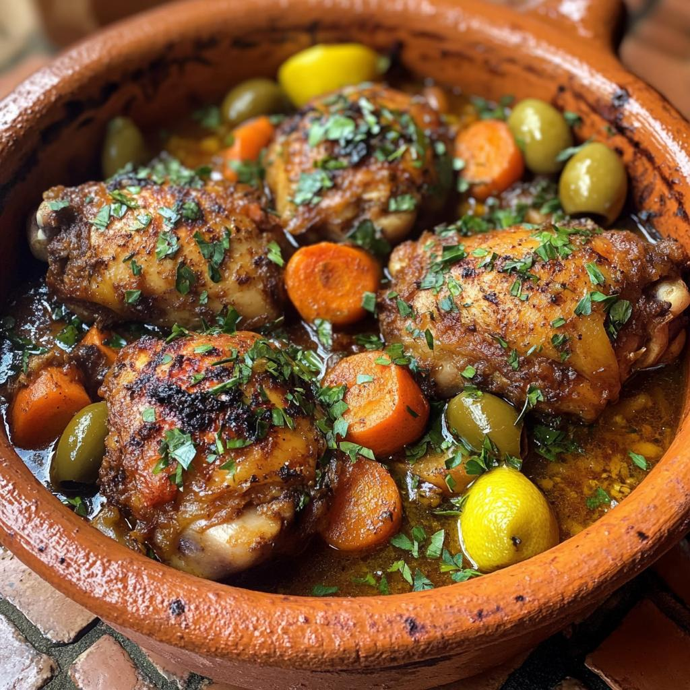

North Africa
Mediterranean, Berber and Arab flavours meet. West Africa · East Africa
Food culture
The Maghreb and the Nile Valley blend Berber, Arab, Ottoman and Mediterranean traditions. Hospitality is expressed through shared dishes and endless glasses of mint tea.
Staples
Couscous, wheat bread, chickpeas, olives, dates, lamb and chicken, with harissa, cumin, saffron and cinnamon for flavour.
Techniques
Slow braising in a tagine, steaming couscous in a couscoussier, preserving lemons, and roasting meat in earthen pits.
Example dishes

Moroccan clay-pot chicken with preserved lemon and olives.
Recipe